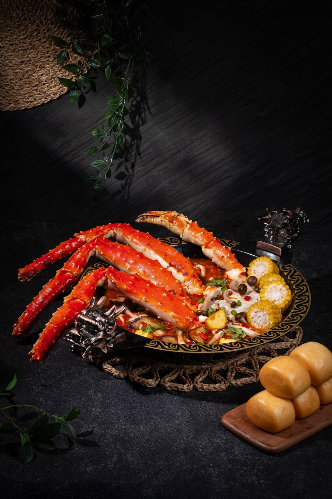
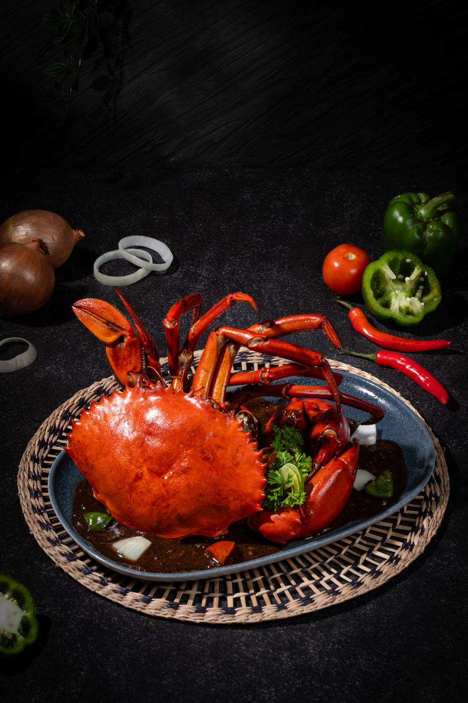
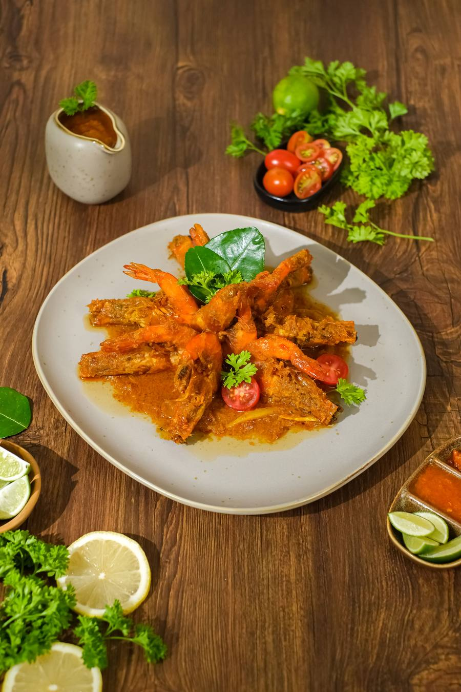

Bandung — Citarum
Kawasan Citarum · Bandung Wetan
Priority Access Bandung Perkiraan — November 2026Laut, tradisi, dan hasil laut pilihan Nusantara, dihadirkan dalam pengalaman bersantap Kurnia yang lebih istimewa.
Ada saatnya sebuah jamuan menjadi lebih dari sekadar makan malam — dan laut layak dihidangkan dengan hormat.
Dari keluarga di balik Kurnia Seafood
Kurnia Group berawal dari sebuah rumah makan bus pariwisata di Ngawi, Jawa Timur. Nama “Kurnia” berarti berkat — sebuah harapan untuk menjadi berkat bagi setiap tamu, serta bagi orang-orang di sekitar kami yang turut menjadi bagian dari perjalanan ini.
Dari Yogyakarta hingga Bali, lima rumah Kurnia tumbuh dengan satu semangat: melayani setiap tamu layaknya keluarga. Dalam perjalanan itu, banyak cerita dan momen berharga telah terjalin bersama para tamu kami.
Dengan semangat menghadirkan pengalaman bersantap yang lebih eksklusif, lahirlah Kurnia Seafood Signature — sebuah undangan untuk menikmati kekayaan laut Nusantara melalui sajian istimewa dan kehangatan pelayanan Kurnia, di Jakarta dan Bandung.
Lima hidangan yang membesarkan nama Kurnia — selengkapnya tersaji di menu Signature.


Tradisi memilih seafood segar khas Kurnia dihadirkan dalam pengalaman yang lebih personal. Tangkapan hidup dipilih bersama chef, ditimbang di hadapan Anda.
Bumbu yang sama yang membesarkan lima cabang Kurnia — disempurnakan untuk pengalaman bersantap yang lebih berkelas.
Ruang yang lebih hening, layanan yang lebih personal. Tanpa terburu-buru — makan malam sebagai peristiwa.

Jamuan bisnis, perayaan keluarga, atau momen istimewa bersama pasangan — setiap outlet Signature dirancang untuk menjadikan momen istimewa Anda berkesan.
Dua outlet pertama Kurnia Seafood Signature sedang dipersiapkan. Lokasi lengkap diumumkan menjelang pembukaan.
Kawasan Citarum · Bandung Wetan
Priority Access Bandung Perkiraan — November 2026Kawasan Pondok Indah · Jakarta Selatan
Priority Access Jakarta Perkiraan — tanggal resmi diumumkanDaftarkan kontak Anda untuk menerima informasi pembukaan reservasi melalui WhatsApp. Tim kami siap membantu merencanakan kunjungan Anda.
Pendaftaran ini belum merupakan konfirmasi reservasi.
KomitmenHidangan seafood tanpa penggunaan alkohol dalam proses memasak.
Smart casualDetail menyusul menjelang pembukaan
DiumumkanMenjelang pembukaan masing-masing outlet
WhatsAppMelalui tombol Priority Access di atas